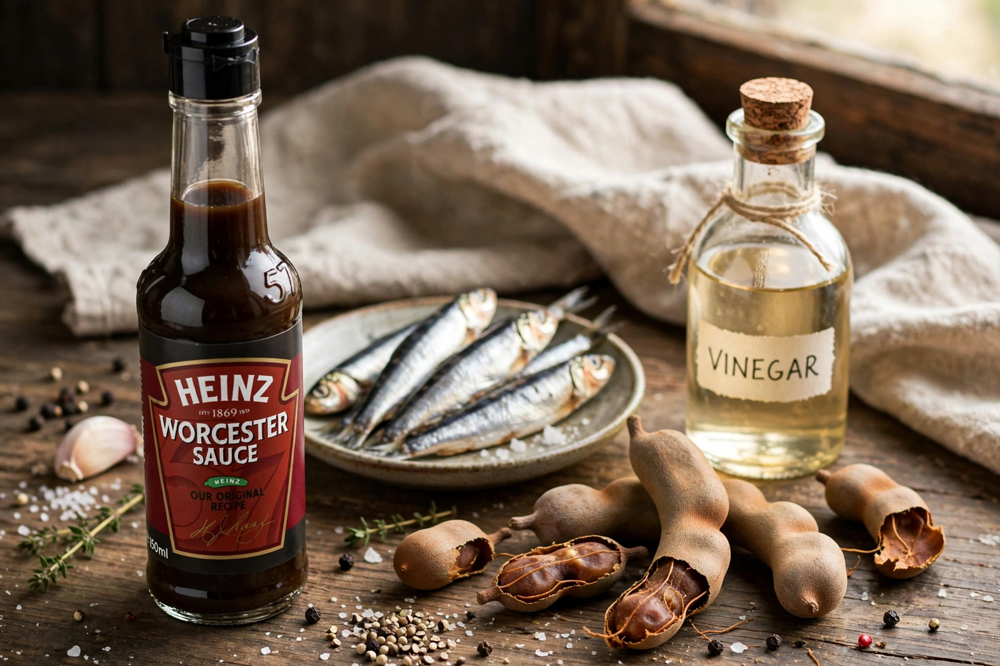

Wikipedia — the free encyclopedia

Worcestershire sauce is a fermented liquid condiment created in the city of Worcester in Worcestershire, England, in the 19th century. The original recipe, commercialised by John Wheeley Lea and William Henry Perrins from 1837, is based on vinegar, molasses, sugar, salt, anchovies, tamarind extract, onions, garlic and spices, aged in barrels.
According to company lore, the recipe came from a British nobleman returning from Bengal; the sauce was at first judged inedible and forgotten in a cellar, where ageing transformed it. Worcestershire sauce is used in Caesar salad dressing, Welsh rarebit, chilli, marinades and the Bloody Mary cocktail. Generic versions are sold worldwide; the Lea & Perrins name remains the best known.